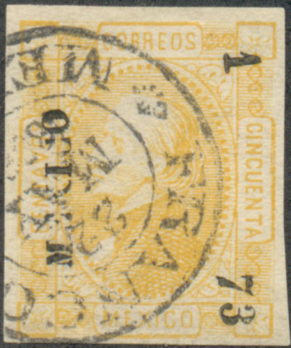

Most likely Flachskamm 'reprints' of Mexico.
Note: on my website many of the
pictures can not be seen! They are of course present in the
catalogue;
contact me if you want to purchase the catalogue.
The forger Henry Flachskamm owned the Standard Stamp Co in St.Louis (USA). He is know for his forgeries of the 1872 issue of Mexico. See also the book "Philatelic Forgers, their Lives and Works' by V.A. Tyler.
Most likely Flachskamm 'reprints' of Mexico.

I've been told that this is a St.Louis forgery.
According to 'The Canadian Philatelic Weekly' 11 1894, January, page 11, Flachskamm (or rather the Standard Stamp Co) was also responsable for a bogus issue of Nova Potuca. According to this journal:
"The stamps for the Republic of Nova Potuca, it is said, were furnished the postmaster of that Republic (wherever it may be) by the Standard Stamp Co., of St. Louis, Mo. We are death on issues of this sort and will show them up every time. They are valueless in our opinion, being nothing more nor less than a scheme to defraud collectors, and are not a legitimate government issue."
If anyone has an image of such a bogus Nova Potuca stamp, please contact me!
Henry Flachskamm was also involved in other cheating activities besides stamp forging. The following report can be found in the St. Louis Republic newspaper of June 20, 1902, page 9:
"HENRY FLACHSKAMM INDICTED.
Said to Have Used the Mails to Defraud - Charge Pending Here.
REPUBLIC SPECIAL
Springfield, Ill., June 19. - The Federal Grand Jury has returned
an indictment against Henry Flachskamm of No. 4 Nicholson place,
St. Louis; R. W. Reaves and Cora L. Siegle, who have been
operating an establishment in East St. Louis known as the
National Mercantile Company. They are charged with using the
mails to defraud.
"The National Mercantile Company," inserted
advertisements in several newspapers. On its face, the
advertisement read that a fur collarette, a half dozen
handkerchiefs and a leather pocketbook would be given to every
agent who sold for the company eight of their gold-plated and
anameled brooches, at 25 cents each. Several thousands persons
throughout the country responded, sending in $2, and in every
instance making request that the collarette be forwarded.
The trio have furnished bond for their appearance for trial in
the United States Court here.
Flachskamm Under Indictment.
Flachskamm was indicted by the May Federal Grand Jury in
St.Louis, but his case was laid over to the November term of the
United States District Court. He was arrainged before Judge Adams
and gave bond for his appearance for trial.
Previous to his operations in St. Louis, Flachskamm, with his
partners, was charged with using the mails to defraud while
living in East St. Louis."
{kind=link}